← 웹툰 책장
아빠가 나로 등교했다
8화, 그림 16장. 그림 위에 영어 말풍선이 있어요. 말풍선 색은 몸이 아니라 몸 안에 든 사람을 따라가요. 한국어 뜻은 그림 밑에 있어요. 그림을 누르면 말풍선이 꺼지고 켜집니다.
시작하기 전에
다미(15)는 수요일 오후 4시에 밴드 오디션이 있어요. 아빠(45)는 같은 날 회사에서 가장 중요한 발표를 해야 해요.
월요일 아침, 눈을 뜨니 둘의 몸이 바뀌어 있어요. 아빠는 딸의 몸으로 학교에 가고, 딸은 아빠의 몸으로 회사에 가요. 그림 속 사람은 몸이고, 말풍선 색이 안에 든 사람이에요.
- 다미15 · 기타를 쳐요
- 아빠45 · 회사원
- 팀장32 · 아빠의 상사
- 유나15 · 다미의 반 친구
1화
to는 딱 하나, '화살표(→)'입니다
오늘은 안 돼 · 25과1화 1장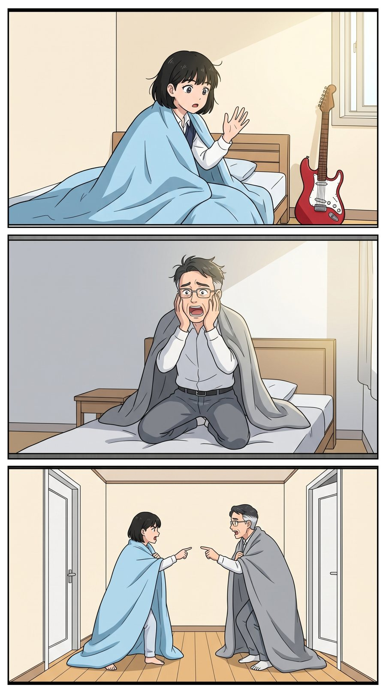
These hands... are so small?!
Why is my face so old?!
Not today! My big meeting is Wednesday!
Not today! My audition is Wednesday!
Mon · 6:50 AM
- 컷 1 · 시각Mon · 6:50 AM월요일 · 아침 6시 50분
- 컷 1 · 아빠 (다미 몸)These hands... are so small?!이 손… 왜 이렇게 작아?!
- 컷 2 · 다미 (아빠 몸)Why is my face so old?!내 얼굴이 왜 이렇게 늙었어?!
- 컷 3 · 아빠 (다미 몸)Not today! My big meeting is Wednesday!오늘은 안 돼! 중요한 회의가 수요일인데!
- 컷 3 · 다미 (아빠 몸)Not today! My audition is Wednesday!오늘은 안 돼! 오디션이 수요일인데!
1화 2장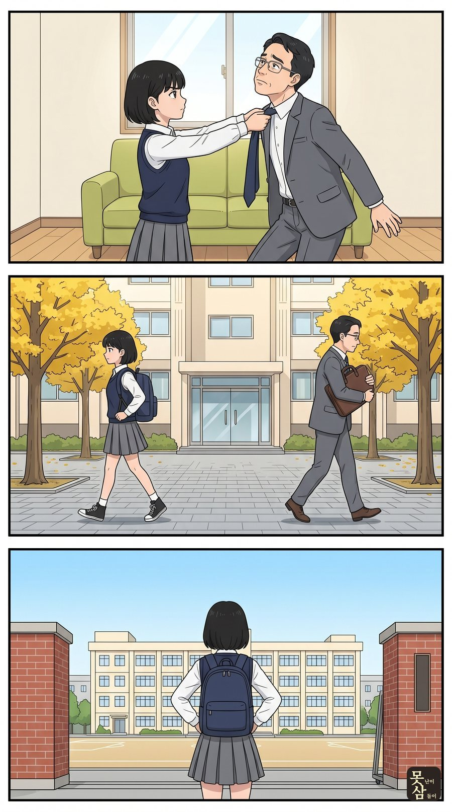
Chin up. You go to work today.
I go to school.
I go to work.
School? How hard can it be?
- 컷 1 · 아빠 (다미 몸)Chin up. You go to work today.턱 들어. 오늘은 네가 출근하는 거야.
- 컷 2 · 아빠 (다미 몸)I go to school.나는 학교에 간다.
- 컷 2 · 다미 (아빠 몸)I go to work.나는 회사에 간다.
- 컷 3 · 아빠 (다미 몸)School? How hard can it be?학교? 그게 얼마나 어렵겠어?
2화
To 부정사 = 행동을 향한 화살표
앉을 자리 · 26과2화 1장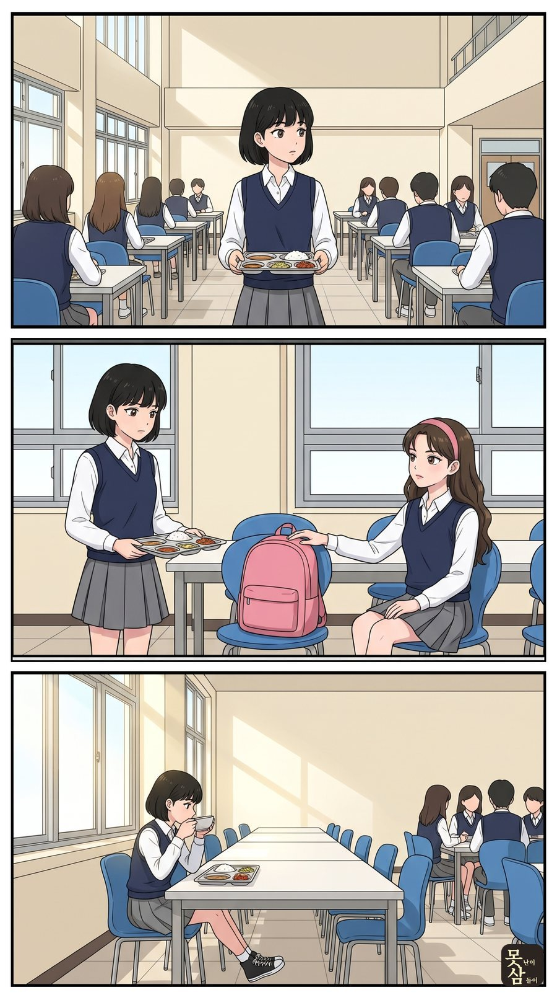
I just want to sit down.
Excuse me. I want to sit here.
Nobody wants to sit with you.
Does she have to eat alone every day?
Mon · 12:30 PM
- 컷 1 · 시각Mon · 12:30 PM월요일 · 낮 12시 30분
- 컷 1 · 아빠 (다미 몸)I just want to sit down.그냥 앉고 싶을 뿐인데.
- 컷 2 · 아빠 (다미 몸)Excuse me. I want to sit here.실례합니다. 여기 앉고 싶은데요.
- 컷 2 · 유나Nobody wants to sit with you.너랑 앉고 싶은 애는 없어.
- 컷 3 · 아빠 (다미 몸)Does she have to eat alone every day?얘는 매일 혼자 먹어야 하는 거야?
2화 2장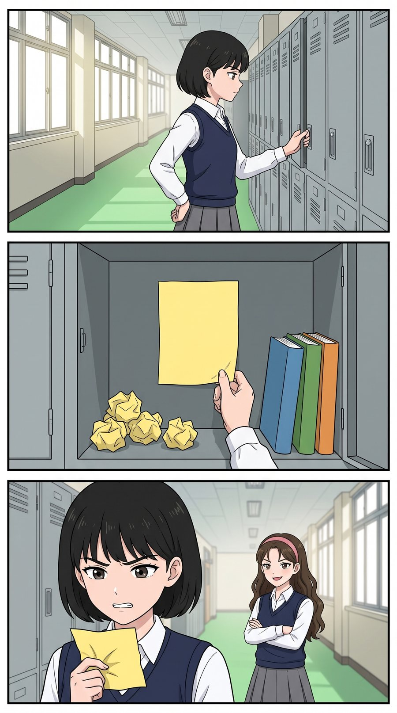
Hm? Something's inside.
To: DamiEat alone. Stay alone.
I need to know who did this.
- 컷 1 · 아빠 (다미 몸)Hm? Something's inside.음? 안에 뭐가 있네.
- 컷 2 · 쪽지 글To: Dami / Eat alone. Stay alone.다미에게 / 혼자 먹어. 혼자 있어.
- 컷 3 · 아빠 (다미 몸)I need to know who did this.누가 이랬는지 알아야겠어.
3화
FOR: 내 마음이 향하는 방향 (위해서)
이건 당신 거예요 · 27과3화 1장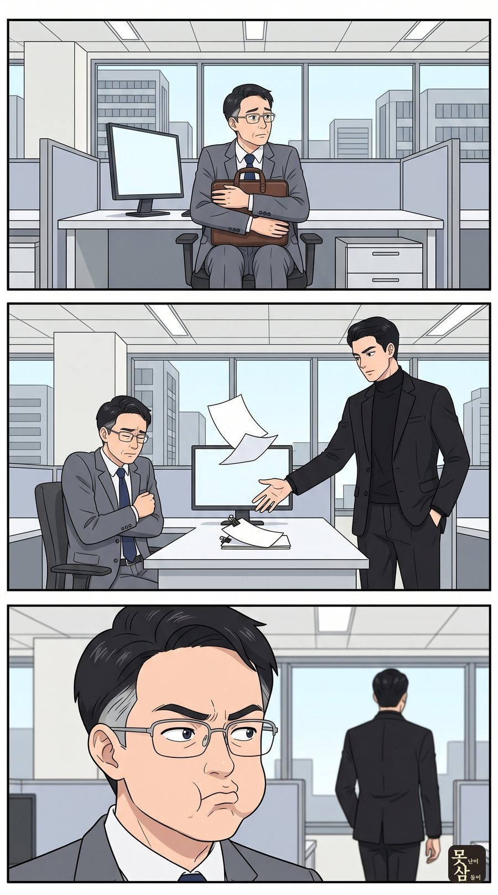
Okay. I'm Dad. Look busy.
This is for you. Do it again.
My dad works for this guy?!
Mon · 3:00 PM
- 컷 1 · 시각Mon · 3:00 PM월요일 · 오후 3시
- 컷 1 · 다미 (아빠 몸)Okay. I'm Dad. Look busy.좋아. 난 아빠다. 바쁜 척하자.
- 컷 2 · 팀장This is for you. Do it again.이건 자네 몫이야. 다시 해 와.
- 컷 3 · 다미 (아빠 몸)My dad works for this guy?!우리 아빠가 이 사람 밑에서 일한다고?!
3화 2장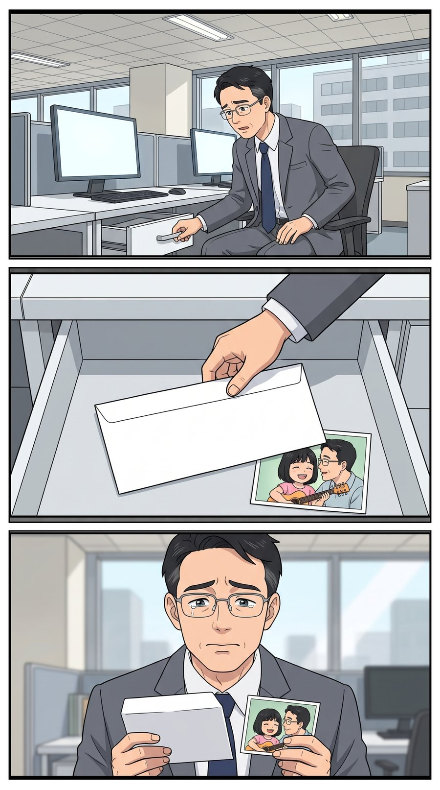
What's he keeping in here?
Resignation LetterI quit.Park Joon-ho
Dad... is this for me?
- 컷 1 · 다미 (아빠 몸)What's he keeping in here?아빠가 여기 뭘 넣어 놨지?
- 컷 2 · 봉투 글Resignation Letter / I quit. / Park Joon-ho사직서 / 그만두겠습니다. / 박준호
- 컷 3 · 다미 (아빠 몸)Dad... is this for me?아빠… 이게 다 나 때문이야?
4화
IN: 경계 안에 있다
별일 없었어 · 28과4화 1장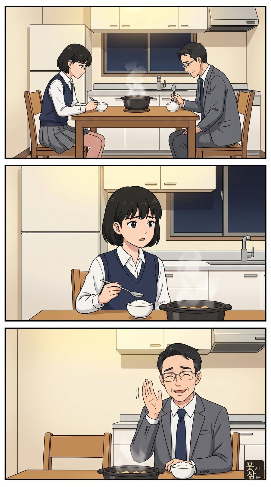
What's in your hand?
Nothing! Nothing happened today!
Mon · 8:30 PM
- 컷 1 · 시각Mon · 8:30 PM월요일 · 저녁 8시 30분
- 컷 2 · 아빠 (다미 몸)What's in your hand?손에 뭐 들었어?
- 컷 3 · 다미 (아빠 몸)Nothing! Nothing happened today!아무것도 아냐! 오늘 별일 없었어!
4화 2장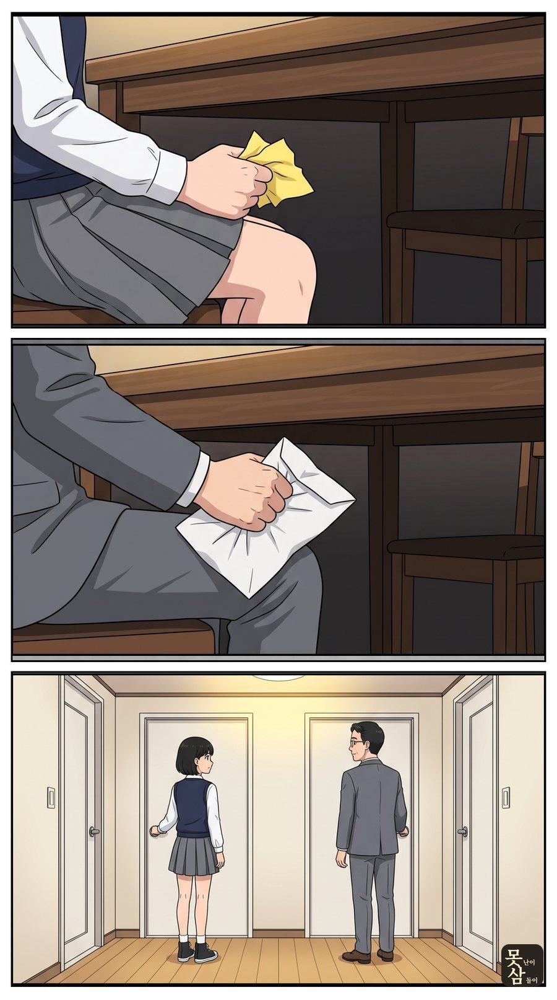
I'm in your body. I saw the notes.
Now I'm in your life. I saw the letter.
- 컷 1 · 아빠 (다미 몸)I'm in your body. I saw the notes.나는 네 몸 안에 있어. 쪽지를 봤어.
- 컷 2 · 다미 (아빠 몸)Now I'm in your life. I saw the letter.이제 나는 아빠 삶 안에 있어. 사직서를 봤어.
5화
AT: 특정한 한 점
나를 봐 · 29과5화 1장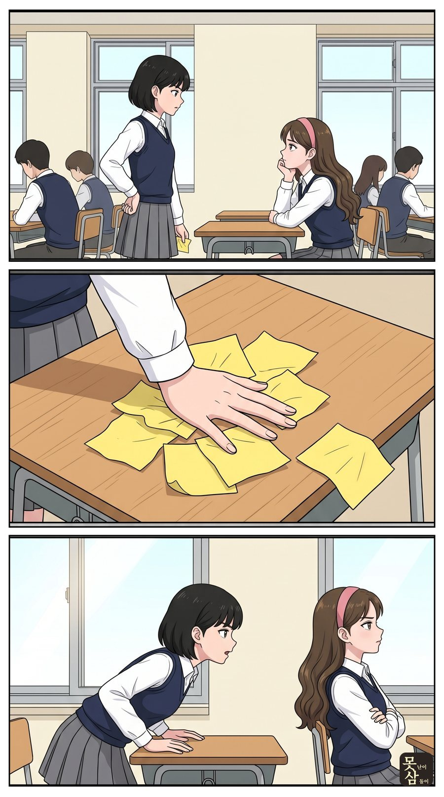
What are you looking at?
Look at me.
Tue · 9:00 AM
- 컷 1 · 시각Tue · 9:00 AM화요일 · 아침 9시
- 컷 1 · 유나What are you looking at?뭘 봐?
- 컷 3 · 아빠 (다미 몸)Look at me.나를 봐.
5화 2장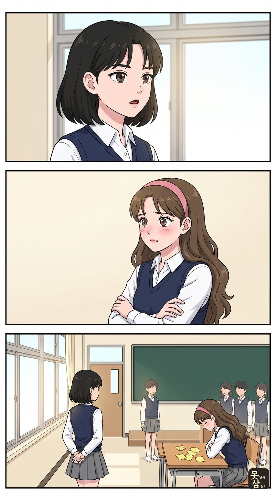
I'm not angry at you.
Why aren't you angry at me?
- 컷 1 · 아빠 (다미 몸)I'm not angry at you.너한테 화난 거 아니야.
- 컷 2 · 유나Why aren't you angry at me?왜 나한테 화 안 내?
6화
ON: 붙어있다
누구 이름 · 30과6화 1장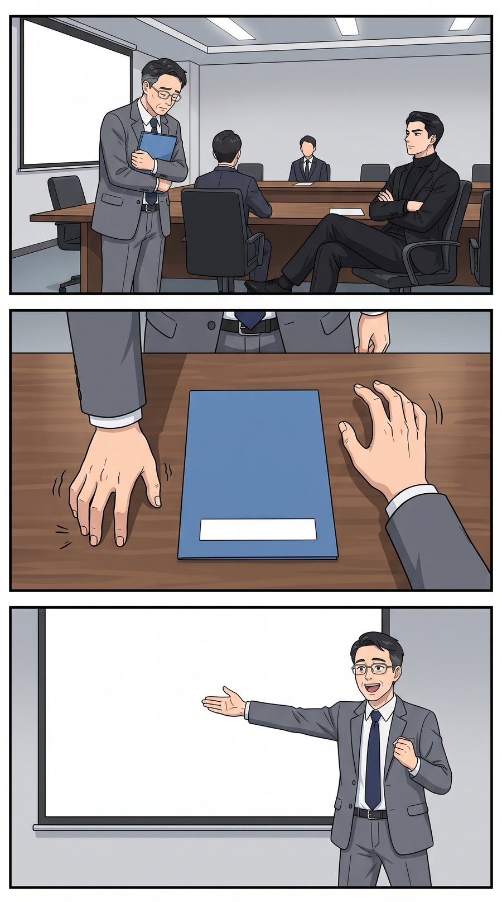
Let's see... another boring plan?
Project: Listen First1. Listen to the customer2. Fix one problem fast
Okay. Turn it on!
Wed · 1:00 PM
Big meeting
- 컷 1 · 시각Wed · 1:00 PM · Big meeting수요일 · 오후 1시 · 중요한 회의
- 컷 1 · 팀장Let's see... another boring plan?어디 보자… 또 지루한 기획인가?
- 컷 3 · 다미 (아빠 몸)Okay. Turn it on!좋아. 켜자!
- 컷 3 · 스크린 글Project: Listen First / 1. Listen to the customer / 2. Fix one problem fast프로젝트: 먼저 듣기 / 1. 고객 말을 먼저 듣는다 / 2. 문제 하나를 빨리 고친다
6화 2장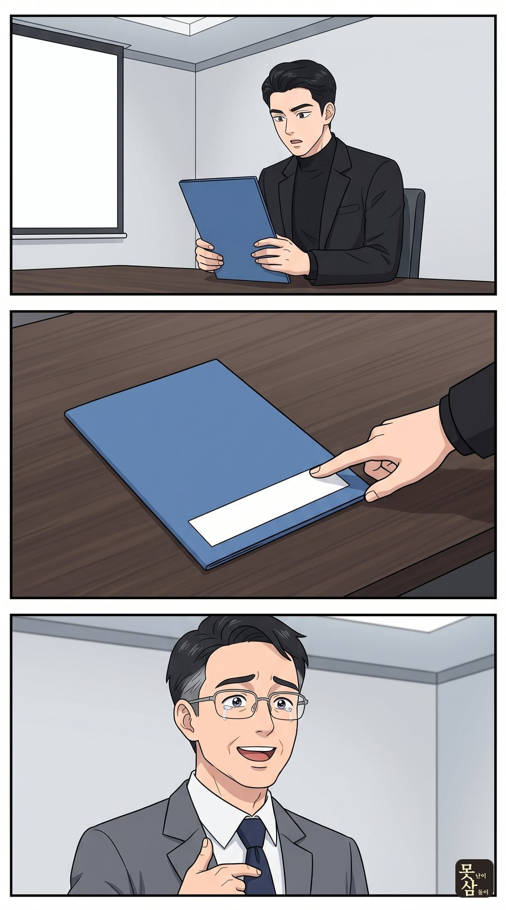
Wait. This is actually good.
Park Joon-ho
Whose name is on this?
His name is on it.
- 컷 1 · 팀장Wait. This is actually good.잠깐. 이거 꽤 괜찮은데.
- 컷 2 · 팀장Whose name is on this?이거 누구 이름이지?
- 컷 2 · 서류철 이름Park Joon-ho박준호
- 컷 3 · 다미 (아빠 몸)His name is on it.그 사람 이름이 적혀 있어요.
7화
OF & OFF
못 쳐 · 31과7화 1장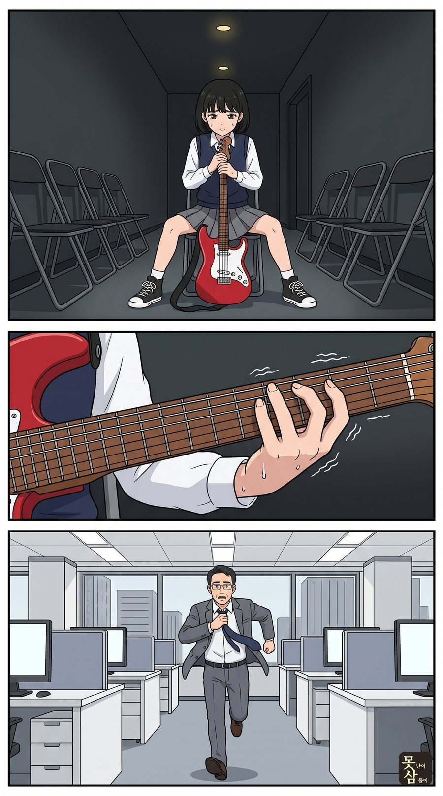
I can't play. I'm afraid of this.
My fingers... won't move.
I'm off! Hold on, Dad!
Wed · 3:40 PM
Audition at 4:00
- 컷 1 · 시각Wed · 3:40 PM · Audition at 4:00수요일 · 오후 3시 40분 · 오디션은 4시
- 컷 1 · 아빠 (다미 몸)I can't play. I'm afraid of this.난 못 쳐. 이게 무서워.
- 컷 2 · 아빠 (다미 몸)My fingers... won't move.손가락이… 안 움직여.
- 컷 3 · 다미 (아빠 몸)I'm off! Hold on, Dad!출발이다! 조금만 버텨요, 아빠!
7화 2장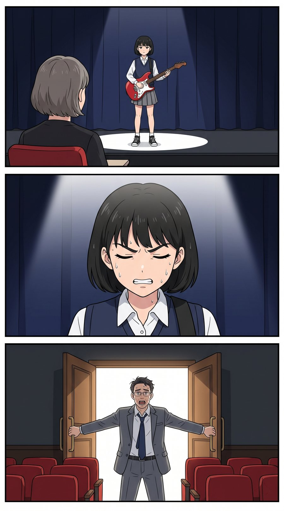
Okay. I'll try for Dami.
Please, someone... help me.
One of us can play!
- 컷 1 · 아빠 (다미 몸)Okay. I'll try for Dami.좋아. 다미를 위해 해 보자.
- 컷 2 · 아빠 (다미 몸)Please, someone... help me.제발, 누구든… 도와줘.
- 컷 3 · 다미 (아빠 몸)One of us can play!우리 둘 중 하나는 칠 수 있어!
8화
넷째 달 복습 (25과 - 31과)
들을게 · 32과8화 1장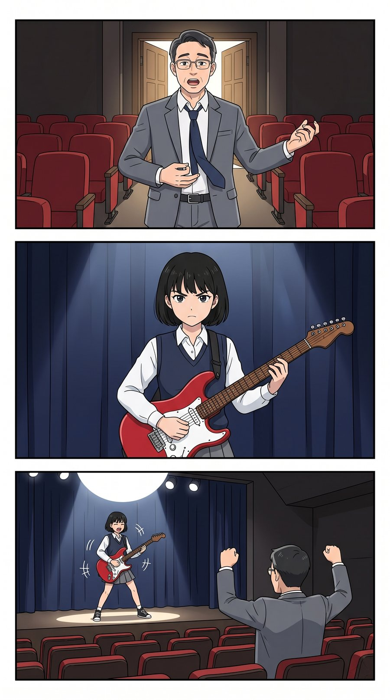
Look at me.
Fingers on the strings... like this?
Play it for me!
Wed · 4:05 PM
- 컷 1 · 시각Wed · 4:05 PM수요일 · 오후 4시 5분
- 컷 1 · 다미 (아빠 몸)Look at me.나를 봐.
- 컷 2 · 아빠 (다미 몸)Fingers on the strings... like this?손가락을 줄 위에… 이렇게?
- 컷 3 · 다미 (아빠 몸)Play it for me!나를 위해 쳐 줘요!
8화 2장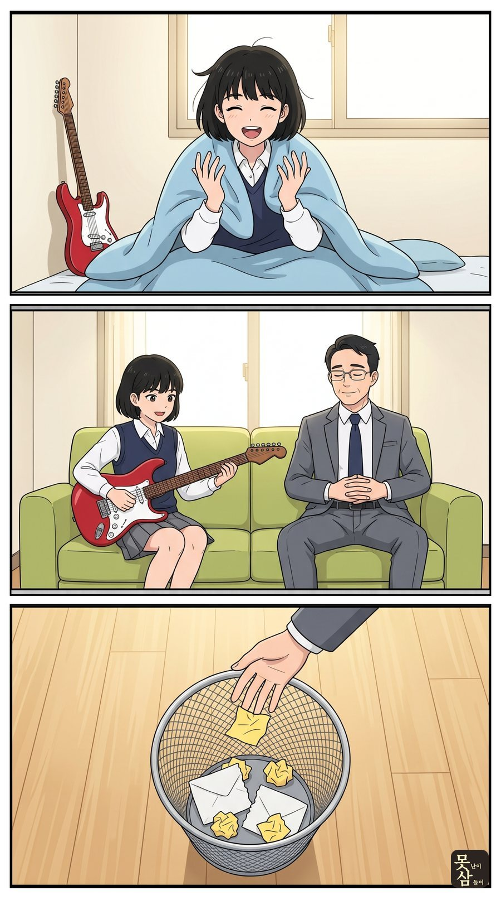
I'm back! These are my hands!
Dad, this one's for you.
I came to listen.
Thu · 7:00 AM
- 컷 1 · 시각Thu · 7:00 AM목요일 · 아침 7시
- 컷 1 · 다미I'm back! These are my hands!돌아왔어! 이건 내 손이야!
- 컷 2 · 다미Dad, this one's for you.아빠, 이 곡은 아빠 거예요.
- 컷 2 · 아빠I came to listen.들으러 왔다.
다 읽고 나서
아빠는 딸의 몸으로 딸이 학교에서 늘 혼자라는 걸 봤어요. 딸은 아빠의 몸으로 아빠가 회사에서 어떤 대접을 받는지 봤어요. 둘 다 서로에게 말하지 못했지만, 수요일에 서로의 자리를 지켜 줬어요.
목요일 아침, 몸은 원래대로 돌아왔어요. 휴지통엔 찢긴 사직서와 구겨진 쪽지가 같이 들어가요.
이 만화를 꿰는 문장 셋이에요. 같은 말 「Look at me.」가 5화에선 아빠가 유나에게, 8화에선 딸이 아빠에게 건네는 말이에요.
- 1화Not today!둘이 같이 외친 첫마디
- 5화Look at me.아빠가 딸의 몸으로 유나에게 한 말
- 8화I came to listen.아빠가 소파에서 딸의 기타를 들으며 한 말
끝.